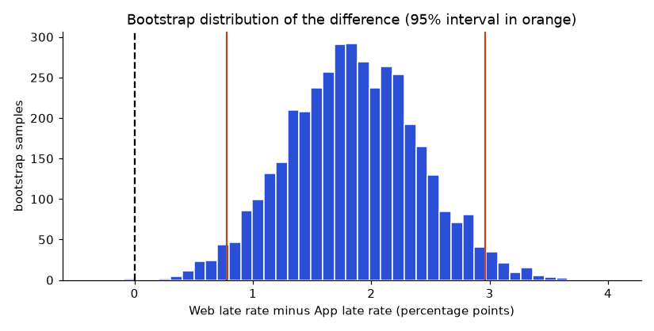
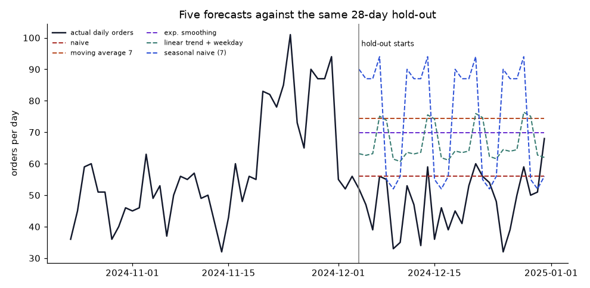

Meera calls: "App customers get late deliveries less often than Web customers. 13.0 percent against 14.9 percent. Should we push everyone to the App?" You have the two numbers. What you do not yet have is an answer to three questions that every decision-maker secretly asks. How sure are we that the difference is not noise? How big could the real difference be? And, the hardest one, if we push customers to the App, will lateness actually fall, or does the difference come from something else?
This is the territory of statistics: describing uncertainty, comparing groups, and being honest about what data can and cannot prove. We keep the one-dataset approach. Each tool computes the same confidence interval and the same test: by hand with formulas, with scipy, by simulation (bootstrap and permutation), and as Excel and Power BI recipes. Then we look at causal traps, and finish with forecasting, comparing five methods on the same hold-out period, because a forecast is just another statistical claim that must face the data.
For the full theory (distributions, hypothesis tests, regression inference, Bayesian methods) see the Statistics document. Here we concentrate on doing it, in several tools, on one dataset.
The average delivery time in our data is a statistic: a number computed from a sample. If ShopKart had a different but similar year, we would get a slightly different average. A confidence interval (CI) gives a range of plausible values for the true long-run average. For a mean, the 95 percent CI is
where x̄ is the sample mean, s the sample standard deviation, n the number of observations, and t about 1.96 for large n. The term s/√n is the standard error: it shrinks as n grows, which is why more data narrows the interval (but only like 1/√n: four times the data halves the width).
Problem 5.1.1 Give a 95 percent CI for the mean delivery time (cleaned data) by hand formula, scipy, the bootstrap, and in a way you could do in Excel.
| Formula | x̄ ± t · s/√n, with s from the sample (divide by n − 1). |
|---|---|
| scipy | stats.t.interval gives the same from the t distribution. |
| Bootstrap | Resample the data with replacement many times; the middle 95 percent of resampled means is the CI. |
| Excel | =CONFIDENCE.T(0.05, STDEV.S(range), COUNT(range)) gives the half-width; add and subtract it from =AVERAGE(range). |
DATA = "data/"
import sys
sys.path.insert(0, DATA)
import prep
import numpy as np
from scipy import stats
o, c, p = prep.load_clean(DATA)
x = o.delivery_minutes.dropna().values
n, mean, s = len(x), x.mean(), x.std(ddof=1)
se = s / np.sqrt(n)
t = stats.t.ppf(0.975, n - 1)
print(f"n={n} mean={mean:.3f} sd={s:.3f} se={se:.4f} t={t:.4f}")
print("by hand :", round(mean - t * se, 3), round(mean + t * se, 3))
print("scipy :", [round(float(v), 3) for v in stats.t.interval(0.95, n - 1, loc=mean, scale=se)])
rng = np.random.default_rng(42)
boot = np.array([rng.choice(x, n).mean() for _ in range(2000)])
print("bootstrap:", [round(float(v), 3) for v in np.percentile(boot, [2.5, 97.5])])n=17208 mean=40.221 sd=9.092 se=0.0693 t=1.9601
by hand : 40.085 40.357
scipy : [40.085, 40.357]
bootstrap: [40.084, 40.358]All three agree to about two decimals: the true mean delivery time is plausibly between 40.1 and 40.4 minutes. The interval is narrow because n is 17,208. Notice what it does not say: it is not the range where 95 percent of deliveries fall (that is far wider, roughly mean ± 2 s, about 22 to 58 minutes). It is about the mean, not individual deliveries. Mixing these two is the most common misreading.
| Tool | Mean CI recipe (not run here for Excel, Power BI, R) |
|---|---|
| Excel | =AVERAGE(Orders[delivery_minutes]) ± CONFIDENCE.T(0.05, STDEV.S(Orders[delivery_minutes]), COUNT(Orders[delivery_minutes])) |
| Power BI (DAX) | SE = DIVIDE(STDEV.S(Orders[delivery_minutes]), SQRT(COUNT(Orders[delivery_minutes]))) then Lower = AVERAGE(Orders[delivery_minutes]) - 1.96 * [SE] (large n, so 1.96 is accurate) |
| R | t.test(orders$delivery_minutes)$conf.int |
| SQL | No built-in; compute AVG, a standard deviation from SQRT(AVG(x*x) - AVG(x)*AVG(x)) (population version) and combine by hand |
The 95 percent describes the procedure: if you repeated the whole sampling many times, about 95 percent of the intervals built this way would contain the true mean. Any single interval either contains it or does not. The bootstrap uses the same idea but replaces the algebra with simulation, which is why it extends to statistics that have no easy formula, such as a median, a 90th percentile or a ratio.
Many business metrics are proportions: late rate, return rate, conversion. For a proportion p̂ = k/n the standard error is √(p̂(1 − p̂)/n). To compare two groups, use the difference p̂1 − p̂2 and the two-proportion z-test: pool both groups under the idea "there is no difference", get z = difference ÷ pooled standard error, and convert z into a p-value, the probability, if there were no true difference, of seeing a gap at least this large by chance.
Problem 5.2.1 Test whether the late rate differs between Web and App orders: by hand formula, with scipy (a chi-square test), by permutation, and with a bootstrap interval for the difference.
| Hypotheses | H0: the true late rates are equal. H1: they differ (two-sided). |
|---|---|
| By hand | Compute pooled p̄, standard error, z, then p = 2 × (1 − Φ(|z|)). |
| scipy | chi2_contingency on the 2×2 table (without continuity correction it equals z²). |
| Permutation | Shuffle the channel labels many times; count how often a gap this large appears by chance. |
| Bootstrap | Resample each group and look at the middle 95 percent of the differences. |
DATA = "data/"
import sys
sys.path.insert(0, DATA)
import prep
import numpy as np
from scipy import stats
o, c, p = prep.load_clean(DATA)
r = o.dropna(subset=["late"])
a = r[r.channel == "App"].late.values
w = r[r.channel == "Web"].late.values
n1, n2, k1, k2 = len(w), len(a), w.sum(), a.sum()
p1, p2 = k1 / n1, k2 / n2
pbar = (k1 + k2) / (n1 + n2)
z = (p1 - p2) / np.sqrt(pbar * (1 - pbar) * (1 / n1 + 1 / n2))
print(f"Web {p1:.4f} (n={n1}) App {p2:.4f} (n={n2}) diff={p1 - p2:.4f}")
print(f"by hand : z={z:.3f} p={2 * (1 - stats.norm.cdf(abs(z))):.5f}")
table = [[k1, n1 - k1], [k2, n2 - k2]]
chi2, pv, _, _ = stats.chi2_contingency(table, correction=False)
print(f"scipy : chi2={chi2:.3f} (= z^2 {z ** 2:.3f}) p={pv:.5f}")
rng = np.random.default_rng(1)
both = np.concatenate([w, a])
count = 0
for _ in range(5000):
rng.shuffle(both)
d = both[:n1].mean() - both[n1:].mean()
count += abs(d) >= abs(p1 - p2)
print("permutation p ~", (count + 1) / 5001)
diffs = [rng.choice(w, n1).mean() - rng.choice(a, n2).mean() for _ in range(3000)]
print("bootstrap 95% CI for the difference:", [round(float(v), 4) for v in np.percentile(diffs, [2.5, 97.5])])Web 0.1490 (n=6643) App 0.1305 (n=10514) diff=0.0185
by hand : z=3.433 p=0.00060
scipy : chi2=11.782 (= z^2 11.782) p=0.00060
permutation p ~ 0.0005998800239952009
bootstrap 95% CI for the difference: [0.0076, 0.0293]All methods say the same: the gap of about 1.9 percentage points is unlikely to be chance (p well under 0.01), and the CI for the difference excludes zero. The bootstrap picture shows the whole distribution:

How to read it: each bar counts how many resamples gave that difference; the orange lines enclose the middle 95 percent. If the dashed zero line sat inside, the data would be compatible with "no difference".
| Tool | Two-proportion recipe (not run here for Excel, Power BI, R) |
|---|---|
| Excel | =(p1-p2)/SQRT(pbar*(1-pbar)*(1/n1+1/n2)) in cells, then =2*(1-NORM.S.DIST(ABS(z),TRUE)) for the p-value; or =CHISQ.TEST(observed, expected) on the 2×2 table |
| Power BI (DAX) | Measures for k and n per channel, a z measure with the same algebra, and a card visual; or compute in an R or Python visual |
| R | prop.test(c(k1, k2), c(n1, n2), correct = FALSE) |
| SQL | SELECT channel, SUM(late), COUNT(late) FROM orders GROUP BY channel gives k and n; the test is a calculation on the output |
The data generator did not build any channel effect into delivery times, so we know the truth here, which real analysts never do. Why does the test see a gap anyway? There are two honest possibilities: a chance result (with p = 0.0006 that would be unusual, but we have run many comparisons in this document), or a feature we did not plan. First check the obvious suspect. Lateness depends on the promise (45 or 60 minutes), and a channel that happened to receive more 45-minute promises would look worse for a reason unrelated to the channel. A variable that is unevenly spread across groups and drives the outcome is a confounder. The remedy is to compare like with like: stratify (compare within each promise level) and combine.
DATA = "data/"
import sys
sys.path.insert(0, DATA)
import prep
o, c, p = prep.load_clean(DATA)
r = o.dropna(subset=["late"])
r = r[r.channel.isin(["App", "Web"])]
t = r.groupby(["promised_minutes", "channel"]).late.agg(["mean", "count"]).round(4)
print(t.to_string())
share = r.groupby("channel").promised_minutes.apply(lambda s: (s == 45).mean()).round(4)
print("share of 45-minute promises:", share.to_dict())
# standardise: weight each stratum by its overall size
w = r.promised_minutes.value_counts(normalize=True)
adj = r.groupby(["channel", "promised_minutes"]).late.mean().unstack()
print("adjusted late rate:", (adj * w).sum(axis=1).round(4).to_dict())mean count
promised_minutes channel
45.0 App 0.2397 5140
Web 0.2662 3332
60.0 App 0.0261 5374
Web 0.0311 3311
share of 45-minute promises: {'App': 0.4889, 'Web': 0.5016}
adjusted late rate: {'App': 0.1315, 'Web': 0.1472}The promise mix is almost identical in the two channels (48.9 versus 50.2 percent of 45-minute promises), so promise is not the confounder here: the Web orders are later within both promise levels, and the adjusted rates barely differ from the raw ones. This is a useful negative result. The gap survives the check we thought of, but there are others we have not checked (city, hour, basket size), and we know in this synthetic data that no channel effect was planted. In real data you would not know. A significant raw gap that survives one adjustment is a lead to investigate, and the only way to settle a causal question ("what happens if we move customers to the App?") is an experiment.
Simpson's paradox is the extreme case of confounding: a trend in every subgroup reverses when the groups are combined, because group sizes differ. The reliable defence is randomisation: if ShopKart flips a coin to decide which customers see the App-first design, all other factors balance out on average, and a difference can be read as the effect of the design. That is an A/B test, next.
Before launching a test you choose three things: the baseline rate (say a late rate of 13.8 percent), the minimum detectable effect (the smallest improvement worth acting on, say 1 percentage point), and the error rates (5 percent false alarms, 80 percent power: a real effect of that size is detected 80 percent of the time). The number of customers per group is approximately
with zα/2 = 1.96, zβ = 0.84, p the baseline rate and δ the minimum effect. We compute it, then test the formula by simulation: run thousands of imaginary experiments in which a true 1-point improvement exists and count how often the test detects it.
DATA = "data/"
import numpy as np
from scipy import stats
p0, delta = 0.138, 0.01
za, zb = stats.norm.ppf(0.975), stats.norm.ppf(0.80)
n = int(np.ceil(2 * (za + zb) ** 2 * p0 * (1 - p0) / delta ** 2))
print("formula: n per group =", n)
rng = np.random.default_rng(3)
def detects(n, p_a, p_b):
a, b = rng.binomial(n, p_a), rng.binomial(n, p_b)
pbar = (a + b) / (2 * n)
z = (a / n - b / n) / np.sqrt(2 * pbar * (1 - pbar) / n)
return abs(z) > 1.96
power = np.mean([detects(n, p0, p0 - delta) for _ in range(4000)])
fa = np.mean([detects(n, p0, p0) for _ in range(4000)])
print(f"simulated power with a real 1-point effect: {power:.3f}")
print(f"simulated false alarm rate with no effect: {fa:.3f}")formula: n per group = 18674
simulated power with a real 1-point effect: 0.819
simulated false alarm rate with no effect: 0.052About 19,000 customers per group are needed to reliably see a one-point change in a 14 percent rate: far more than most people expect, and many times the entire ShopKart customer base of 4,000 people. (The unit could be orders instead of customers, but then orders from the same customer are not independent, a subtlety that matters in real tests.) The simulation confirms the formula (power near 0.80, false alarms near 0.05). The practical consequences: choose a larger effect worth detecting, use a more frequent metric, or run longer.
The peeking trap. If you check the test every day and stop the first time p < 0.05, your false alarm rate is no longer 5 percent. Simulate 20 looks at an A/A test (no real effect):
DATA = "data/"
import numpy as np
rng = np.random.default_rng(11)
looks, per_look, p = 20, 500, 0.138
stopped = 0
runs = 2000
for _ in range(runs):
a = rng.binomial(1, p, looks * per_look)
b = rng.binomial(1, p, looks * per_look)
for i in range(1, looks + 1):
n = i * per_look
pa, pb = a[:n].mean(), b[:n].mean()
pbar = (pa + pb) / 2
z = (pa - pb) / np.sqrt(2 * pbar * (1 - pbar) / n)
if abs(z) > 1.96:
stopped += 1
break
print("share of no-effect experiments declared significant when peeking 20 times:", round(stopped / runs, 3))share of no-effect experiments declared significant when peeking 20 times: 0.235Nearly a quarter of experiments with no effect get declared a win. Decide the sample size in advance and look once, or use methods designed for repeated looks (sequential tests). The peeking trap is a main reason why "winning" experiments disappoint later.
Q9 asked whether discounted orders carry more units. This is a comparison of two means. The Welch t-test compares them without assuming equal variances. By hand: t = (x̄1 − x̄2) ÷ √(s1²/n1 + s2²/n2).
DATA = "data/"
import sys
sys.path.insert(0, DATA)
import prep
import numpy as np
from scipy import stats
o, c, p = prep.load_clean(DATA)
a = o[o.discount > 0].quantity.values
b = o[o.discount == 0].quantity.values
se = np.sqrt(a.var(ddof=1) / len(a) + b.var(ddof=1) / len(b))
t = (a.mean() - b.mean()) / se
print(f"discounted {a.mean():.4f} (n={len(a)}) full price {b.mean():.4f} (n={len(b)})")
print(f"by hand: diff={a.mean() - b.mean():.4f} t={t:.3f}")
res = stats.ttest_ind(a, b, equal_var=False)
print(f"scipy : t={res.statistic:.3f} p={res.pvalue:.3f}")
lo, hi = (a.mean() - b.mean()) + np.array([-1.96, 1.96]) * se
print(f"95% CI for the difference: {lo:.4f} to {hi:.4f}")discounted 1.9542 (n=11386) full price 1.9405 (n=8609)
by hand: diff=0.0137 t=0.928
scipy : t=0.928 p=0.353
95% CI for the difference: -0.0152 to 0.0427The difference in units is tiny and the CI includes zero (p well above 0.05): discounts, in this data, do not raise units per order. That is a null result, and a useful one: it says that giving 5 to 20 percent off did not buy bigger baskets. It does not prove discounts do nothing (they might bring more orders per customer, which a different metric would show). The absence of evidence at this sample size is evidence only about differences larger than the CI.
| Tool | Welch t-test recipe (not run here for Excel, Power BI, R) |
|---|---|
| Excel | =T.TEST(range1, range2, 2, 3) returns the two-sided p-value with unequal variances (type 3); or Data Analysis Toolpak, t-Test: Two-Sample Assuming Unequal Variances |
| Power BI | Not a statistics tool; compute group means and standard errors as measures, or run scipy in a Python visual |
| R | t.test(quantity ~ discounted, data = orders) (Welch by default) |
| SQL | Per-group AVG, variance, COUNT; the test statistic is arithmetic on the three numbers |
If you test 20 independent hypotheses at the 5 percent level, you expect one false alarm even if nothing is real. When you slice by city, channel, hour and category, you run dozens of tests. Remedies: decide the primary comparison before looking, use a stricter threshold (Bonferroni: α divided by the number of tests), and confirm surprising findings on new data. Our Web versus App result came from one of many comparisons we could have made; the confounding analysis above is the second line of defence.
A forecast is a statement about the future that will be checked. Judging it honestly needs a hold-out: train on the past, hide the most recent weeks, predict them, and compare the prediction with what happened. Never evaluate a forecast on the data used to fit it. We forecast daily order counts for the last 28 days of the year, using only data before 4 December.
| Method | Idea | When it works |
|---|---|---|
| Naive | Tomorrow equals today | Stable series; a baseline everything must beat |
| Seasonal naive | Same weekday last week | Strong weekly pattern |
| Moving average (7) | Mean of last 7 days | Noisy, flat series |
| Exponential smoothing | Weighted mean, recent days weigh more: levelt = α · yt + (1 − α) · levelt−1 | Slowly changing level |
| Regression: trend + weekday | Fit a straight line plus weekday effects | Steady growth with weekly pattern |
DATA = "data/"
import sys
sys.path.insert(0, DATA)
import prep
import numpy as np, pandas as pd
o, c, p = prep.load_clean(DATA)
y = o.groupby("order_date").size().astype(float)
H = 28
tr, te = y.iloc[:-H], y.iloc[-H:]
f = {}
f["naive"] = np.repeat(tr.iloc[-1], H)
f["seasonal naive (7)"] = np.tile(tr.iloc[-7:].values, 4)
f["moving average 7"] = np.repeat(tr.iloc[-7:].mean(), H)
def level(x, a):
l = x[0]
for v in x[1:]:
l = a * v + (1 - a) * l
return l
def sse(a):
l, e = tr.iloc[0], 0.0
for v in tr.iloc[1:]:
e += (v - l) ** 2
l = a * v + (1 - a) * l
return e
alphas = np.linspace(0.05, 0.95, 19)
alpha = alphas[np.argmin([sse(a) for a in alphas])]
f["exp. smoothing"] = np.repeat(level(tr.values, alpha), H)
def design(idx, t0):
t = np.arange(len(idx)) + t0
return np.column_stack([np.ones(len(idx)), t] + [(idx.dayofweek == d).astype(float) for d in range(1, 7)])
beta = np.linalg.lstsq(design(tr.index, 0), tr.values, rcond=None)[0]
f["linear trend + weekday"] = design(te.index, len(tr)) @ beta
print("alpha chosen on training data:", round(alpha, 2))
rows = []
for k, v in f.items():
e = te.values - v
rows.append((k, np.abs(e).mean(), np.sqrt((e ** 2).mean()), 100 * np.abs(e / te.values).mean(), e.mean()))
print(pd.DataFrame(rows, columns=["method", "MAE", "RMSE", "MAPE%", "bias"]).round(2).sort_values("MAE").to_string(index=False))
print("mean actual in hold-out:", round(te.mean(), 2), "| mean of last 28 training days:", round(tr.iloc[-28:].mean(), 2))alpha chosen on training data: 0.15
method MAE RMSE MAPE% bias
naive 9.82 12.37 24.51 -8.25
linear trend + weekday 19.05 20.45 44.26 -18.62
exp. smoothing 22.09 23.94 52.22 -22.09
moving average 7 26.68 28.22 62.21 -26.68
seasonal naive (7) 27.75 32.86 63.17 -26.68
mean actual in hold-out: 47.75 | mean of last 28 training days: 63.46
How to read it: the black line is what really happened. The hold-out begins right after a promotion-driven peak, so every method that averages over the recent past predicts too many orders (negative bias in the table: actual minus forecast is below zero). The naive forecast, which looks only at the last day (a normal day), happens to be best. Keep that in mind before trusting any model that cannot beat it. The methods that model trend and weekday are too high because the series stopped growing in autumn.
Three metrics measure the error. MAE (mean absolute error) is the average miss in orders per day; RMSE punishes large misses more; MAPE is the miss as a percentage of the actual. MAPE misbehaves when actual values are near zero, and it favours under-forecasts. A single hold-out can mislead, so repeat the test from several starting points (a rolling origin backtest) before you declare a winner.
DATA = "data/"
import sys
sys.path.insert(0, DATA)
import prep
import numpy as np
o, c, p = prep.load_clean(DATA)
y = o.groupby("order_date").size().astype(float)
h = 14
scores = {"naive": [], "moving average 7": [], "seasonal naive (7)": []}
for origin in range(200, 340, 28):
tr, te = y.iloc[:origin], y.iloc[origin:origin + h]
pred = {"naive": np.repeat(tr.iloc[-1], h),
"moving average 7": np.repeat(tr.iloc[-7:].mean(), h),
"seasonal naive (7)": np.tile(tr.iloc[-7:].values, 2)}
for k, v in pred.items():
scores[k].append(np.abs(te.values - v).mean())
for k, v in scores.items():
print(f"{k:20s} mean MAE over {len(v)} origins: {np.mean(v):6.2f} per origin: {np.round(v, 1)}")naive mean MAE over 5 origins: 10.86 per origin: [ 9. 11.1 11.7 12.4 10.1]
moving average 7 mean MAE over 5 origins: 9.39 per origin: [ 9.6 11.6 8.4 7. 10.4]
seasonal naive (7) mean MAE over 5 origins: 10.34 per origin: [11.1 9. 10.9 8.6 12.1]Over several origins the three simple methods are within a couple of orders per day of each other, and the moving average is slightly ahead: the "winner" on one hold-out is not the winner on average. The lesson for practice: always start with naive baselines, evaluate over several windows, and add complexity only if it wins consistently. Complex models with a trend line extrapolate growth that may have stopped (see the trend model in the hold-out table).
| Tool | Forecasting recipe (not run here) |
|---|---|
| Excel | =FORECAST.LINEAR(x, known_y, known_x) for a trend; =FORECAST.ETS(target_date, values, timeline) for exponential smoothing with seasonality; Data, Forecast Sheet for a chart with an interval |
| Power BI | Line chart, Analytics pane, Forecast: choose forecast length and seasonality; it uses exponential smoothing; set "ignore last N points" to hold out and compare |
| R | forecast::ets(), forecast::auto.arima(), fable package |
| Python | The code above; for production use statsmodels or prophet (not installed here) |
A point forecast ("about 48 orders tomorrow") without an interval is half an answer. A simple honest interval is the empirical one: record the errors of your method over many backtest origins and use their 5th and 95th percentiles as an error band. It makes no distribution assumption and reflects how wrong the method has really been.
| Task | SQL | pandas / scipy | Excel | Power BI | R |
|---|---|---|---|---|---|
| Descriptive stats, group means | Easy | Easy | Easy | Easy | Easy |
| CI and tests | Manual arithmetic | Built in | Functions and Toolpak | Manual measures | Best built-in support |
| Simulation and bootstrap | Awkward | Natural | VBA or heavy formulas | Via R or Python visual | Natural |
| Regression with inference | No | Needs statsmodels (not installed here) | LINEST, Toolpak | Limited | Native lm |
| Forecasting | Window averages only | Manual or libraries | ETS functions | Built-in forecast line | Rich packages |
| Reproducibility | Query text | Script | Weak | Model | Script |
If a statistic will go to a decision, make it reproducible (script) and show the interval, not only the point estimate.
| Pattern | Meaning |
|---|---|
| SE = s/√n | Standard error of a mean |
| p̂ ± 1.96 √(p̂(1 − p̂)/n) | Large-sample CI for a proportion |
| n ≈ 2 (1.96 + 0.84)² p(1 − p) / δ² | Sample size per group, 80% power, 5% alpha |
| MAE, RMSE, MAPE | Forecast errors: average, squared, percent |
| Rolling origin | Several train/test splits through time |
Problem 5.8.1 A sample of 400 deliveries has mean 40 and standard deviation 9. Give a 95 percent CI for the mean (use 1.96).
Answer: SE = 9 ÷ √400 = 0.45; margin = 1.96 × 0.45 = 0.882; CI = 39.12 to 40.88.
Problem 5.8.2 What happens to the CI width if you quadruple the sample size?
Answer: It halves, because SE = s/√n and √4 = 2.
Problem 5.8.3 In the cleaned data, how many orders have both a promise and a delivery time, and what is the late rate?
Answer: 17,208 orders and a late rate of 13.76%.
Problem 5.8.4 130 of 1,000 App orders and 150 of 1,000 Web orders are late. Compute the pooled rate and z.
Answer: p̄ = 280 ÷ 2000 = 0.14. SE = √(0.14 × 0.86 × (1/1000 + 1/1000)) = √(0.1204 × 0.002) = √0.0002408 = 0.01552. z = 0.02 ÷ 0.01552 = 1.29, p about 0.20: not significant at this sample size.
Problem 5.8.5 Why does the same 2-point difference become significant with 10,000 orders per channel?
Answer: SE shrinks with √n; with n = 10,000 per group SE is about 0.0049 so z is about 4.1.
Problem 5.8.6 Explain a p-value of 0.03 in one sentence, without saying "probability the hypothesis is true".
Answer: If there were truly no difference, data this extreme or more would occur about 3 percent of the time.
Problem 5.8.7 Name the confounder in the Web versus App comparison and how we controlled for it.
Answer: The promised time (45 or 60 minutes); we compared within each promise level and re-weighted to a common mix.
Problem 5.8.8 Compute the sample size per group to detect a drop from 20 percent to 18 percent (80 percent power, 5 percent alpha).
Answer: n ≈ 2 × 7.85 × 0.2 × 0.8 ÷ 0.02² = 2 × 7.85 × 0.16 ÷ 0.0004 = 6,280 per group (using (1.96 + 0.84)² = 7.84, 6,272).
Problem 5.8.9 An analyst checks an experiment daily and stops at the first p below 0.05. What is wrong?
Answer: Repeated looks inflate the false alarm rate far above 5 percent; fix the sample size in advance or use a sequential method.
Problem 5.8.10 For the hold-out in this chapter, which method had the lowest MAE and why might it not win in general?
Answer: The naive forecast; the hold-out started just after a promotion spike, so averaging methods over-predicted. Over several origins the ranking changes.
Problem 5.8.11 What is wrong with reporting the R² of a trend line as forecast accuracy?
Answer: R² measures fit to the data used to build the line; forecast accuracy needs unseen data.
Problem 5.8.12 Find the bug: t.interval(0.95, n, loc=mean, scale=s) to get the CI for a mean.
Answer: The df should be n − 1 and the scale should be the standard error s/√n, not s; as written the interval is for individual values and far too wide.
Problem 5.8.13 Interview style: "The experiment shows +2 percent conversion with p = 0.04. Do we ship?"
Answer: Ask the pre-registered sample size and stopping rule, number of metrics and segments tested, the interval (not only p), guardrail metrics, and whether the size of the effect matters for the business. Then decide.
You are my patient, practical professor. I am a working professional moving into data roles. Teach me confidence intervals, p-values and A/B tests using an online retail example. For each idea show me the by-hand formula, the scipy version and the Excel version. Ask me one question at a time and check my arithmetic.
Act as a senior data scientist reviewing my experiment plan: [paste hypothesis, metric, sample size, duration]. Check the metric definition, the sample size calculation, the stopping rule, confounders, multiple comparisons and guardrail metrics. Give me a corrected plan on one page.
Run a mock interview on statistics for analytics roles. Ask me one at a time: explain a confidence interval to a manager, difference between significance and importance, why peeking is a problem, how to evaluate a forecast, and when bootstrap is better than a formula. Grade each answer and summarise.